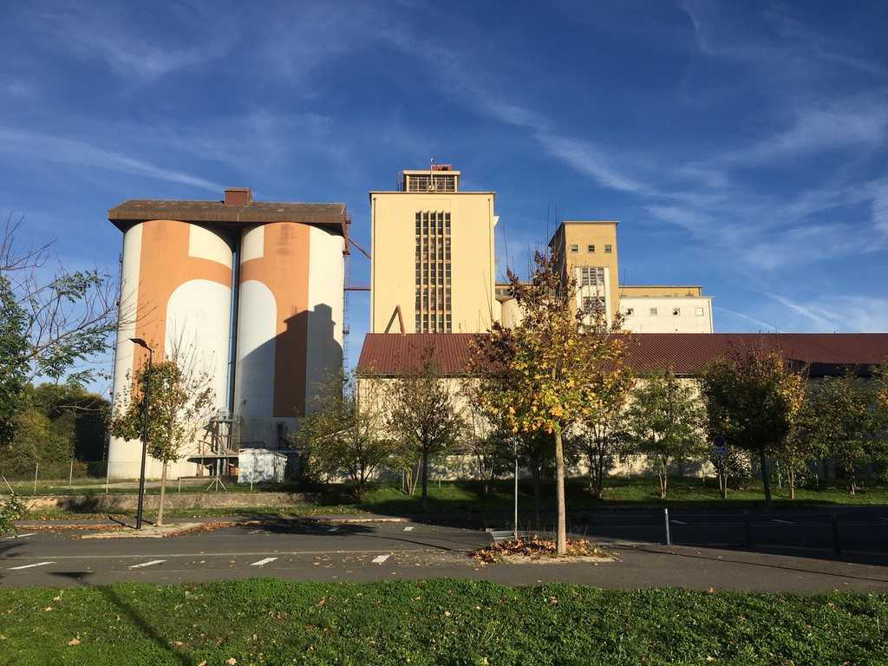

Nous avons tardé à vous introduire l’équipe de Vitry-le-François.. ! Troisième terrain d’expérimentation du programme, direction la Marne sur les pas de François 1er, pour découvrir notre « petit » terrain vitryat et ses particularités. Qui a dit que la politique de la ville ne concernait que les grands centres urbains ? A demi-tons entre ville et ruralité, cette commune de l’est qui porte son contrat de ville à l’échelle communale (et bing l’interco) a pourtant long à nous dire sur les problématiques spécifiques aux petites villes en zone rurale, de la déprise démographique au renouvellement urbain* aux airs de décroissance.
Pour mener l’enquête à l’unisson, un duo composé de Chloé (designer à la 27e, avec toujours un œil qui traîne) et Camille Arnodin (chargée d’étude férue des questions à milles rebonds) : il n’en fallait pas moins pour décortiquer les liens à l’œuvre dans un équipe d’apparence petite, mais dont les actions résonnent largement sur le territoire.
On vous raconte en 3 ballades nos premières semaines d’enquête auprès de nos complices de l’équipe de Développement social & urbain.
*Lost in translation ? Direction le lexique pour réviser les paroles propres à la PV.. Oups, politique de la ville !
Les premiers temps dédiés à des entretiens individuels puis à des visites nous ont permis de prendre la mesure du territoire vitryat et des périmètres d’action de l’équipe DSU. Commune de 12 000 habitants environ, Vitry-le-François comprend deux QPV (Quartiers prioritaires de la politique de la ville) — Rome Saint-Charles et Le Hamois, ainsi que plusieurs QVA (quartiers de veille active), sortis du dispositif précédent car en dessous du seuil des 1000 habitants. Une première source d’interrogation pour une ville dont la population baisse régulièrement depuis plusieurs années, mais dont les difficultés sociales et économiques perdurent.

Nos complices locaux, rassemblés autour d’un chef de projet qui mène la danse, constituent une équipe plurielle et complémentaire, marquée par une forte proximité avec le terrain. C’est bien simple, ils sont connus et reconnus (« on est sollicité même en allant faire des courses, c’est un boulot à plein temps ! »). Nous avons donc joué le jeu d’apprendre à les connaître en dessinant les parcours de vie de ces chevilles ouvrières du contrat, qui sont au cœur de notre recherche-action.
Résultat : pas un unique chargé de projet DSU mais autant de postures que de fiches de postes différentes pour coordonner, mettre en œuvre et animer les différentes actions de la PV. Le tout fortement influencé par l’imbrication des dispositifs : Contrat Local de Santé, Dispositif de Réussite Éducative, etc. Mais surtout, qu’ils s’agissent de coordination (CLS, Direction DSU), ou de missions plus opérationnelles (animation terrain), toutes et tous sont fortement militant.e.s et engagé.e.s sur le territoire depuis longtemps.
« Je suis en poste depuis 8 ans, Khalid* depuis 12 ans. Une partie de l’équipe vit à Vitry et/ou a grandi dans les quartiers.(..) Il faut bien deux ou trois ans pour vraiment maîtriser ce que recoupent nos actions, donc c’est pas évident au démarrage. » *Khalid Ida-Ali, Chef de projet DSU
« Moi j’ai grandi avec ces jeunes, je suis connu donc je ne suis pas identifié directement comme ‘quelqu’un de la mairie’. »
Un premier fil à tirer pour les novices que nous sommes, et qui commençons à mesurer le « coût d’entrée » dans la politique de la ville comme chacun d’entre eux nous l’a souligné.
Mais le contrat de ville dans tout ça ? Pour nos complices, notre fascination pour l’objet est sinon suspecte, au moins étrange, tant le contrat est fondu et confondu dans toutes leurs activités. Source de financement ? Cadre d’action ? Prétexte à la mobilisation des partenaires ?
« Le Contrat c’est à la fois partout et nul part. On s’y réfère dans les groupes de travail, si on a un doute sur une action on demande à Khalid, mais ce qui nous intéresse surtout c’est les actions qu’on mène sur le territoire. »
« Au début (nr. le contrat) c’est trop compliqué : pas clair sur ce que c’est, à quoi ça sert. C’est avec le temps qu’on voit l’importance du document. (…) Quand on arrive dans la structure, on nous montre un pavé, ce n’est pas évident si on n’a pas travaillé dessus. Le fait de retravailler tous les ans un peu dessus avec les groupes de travail, on s’en imprègne, on voit tous les axes sur lesquels on doit travailler.»
Nous qui pensions débattre longuement de programmation, de rapport au temps, ou de droit commun, nous nous trouvons à botter en touche sur un objet tout à la fois omniscient et invisible. Particularité de Vitry ou symptôme plus large ? En tout cas ici, le contrat est pour tous incarné par son chef de projet à la politique de la ville, référent qui orchestre la valse des financements et des instances en ménageant à sa manière les partitions pour les adapter au mieux aux spécificités du contexte local.
Autre point d’étonnement ? L’équipe DSU porte ses propres actions, inscrites au contrat de ville et animées par ses agents. Connue pour sa capacité à porter et conduire des projets, l’équipe est même repérée par ses voisins du droit commun comme « ceux qui savent tout faire », et fréquemment sollicitée. Un exemple supplémentaire que la politique de la ville à Vitry-le-François prend une place toute singulière dans la dynamique de la municipalité.
« Dans nos territoires bien sûr il y a des associations, mais nous n’avons pas la même offre que des grandes métropoles. Il y a des manques pour répondre à tous les besoins identifiés dans le diagnostic. »
« Dans les autres services y’a pas le grain de folie, l’idée qu’on va faire en sorte que ça soit possible »
Aussi si l’objet est bien là, sur une étagère ou un dossier numérique, il n’est que rarement consulté dans son entièreté. Alors, comment s’incarne-t-il réellement ?
Nous ne reviendrons pas ici par le menu sur les notions incontournables du CdV : nous vous renvoyons pour cela aux récits très complets de nos collègues d’Aix-Marseille. Et si nous retrouvons bien sûr leurs constats sur le terrain de Vitry, nous avons néanmoins été surprises par les nombreuses stratégies d’adaptation du contrat relevées au fil des entretiens.
Nous nous y sommes confrontées concrètement, en participant à différentes actions et instances liées au contrat de ville : gestion urbaine de proximité, groupes de travail thématiques en préparation de l’appel à projet (dans le cadre de la programmation annuelle des actions), réunion inter-villes… On comprend qu’avec la PV, il y la partition puis l’interprétation : on vous en dit plus sur ces quelques manifestations singulières du contrat.
On a parcouru le chemin. Ici, l’équipe de Vitry-le-François organise 6 groupes de travail thématiques en lieu des 3 préconisés par le contrat de ville, après validation avec les services de l’Etat. La raison ? Une dynamique pré-existante qu’il s’agissait de renforcer.
« La démarche de territoire partagé, conçue en 2010, avec 6 groupes de travail, nous donnait le sentiment de couvrir les besoins. La loi Lamy a demandé via les CdV de se baser sur 3 groupes de travail, appelés « piliers ». On a appelé la DDCSPP, pour dire qu’on avait déjà ces habitudes de travail, avec l’idée de ne pas fragiliser ce qu’on avait déjà démarré… »
Ces groupes de travail réunissant toutes les parties prenantes concernées par la thématique (santé, famille et parentalité, sécurité et prévention de la délinquance…) sont aussi pensés comme des occasions, outre de partager des problématiques du territoire, de faire émerger de nouvelles conventions pour renforcer les actions, élargir le périmètre des dispositifs liés au contrat, ou même faire naître de nouveaux projets par d’autres circuits. Un exemple ? La Convention Territoriale Globale signée avec la CAF pour renforcer les dispositifs famille ou encore le CLS (Contrat local de santé) signé avec l’ARS (Agence régionale de santé), et ce pour toute la ville.
« A la base, chaque institution a son propre dispositif. Nous on s’est battu pour intégrer les dispositifs au CdV, ou en tout cas les relier formellement. Le CdV est là pour penser les inégalités. Et ce dans un ensemble plus large qu’est la ville. »
De notre point de vue de novices, il nous semble que les instances du CdV jouent alors le rôle d’une « première exposition » – comme pour un réseau neuronal – tissant un premier lien permettant plus tard d’activer ou réactiver des liens dormants. Une mise en relation facilitée par l’échelle d’une petite ville ? Peut-être, mais qui ne fonctionnerait pas sans l’animation attentive et suivie des équipes DSU, ainsi que le portage d’un élu attentif.
« C’est aussi une volonté municipale d’étendre les dispositifs, l’exposition Luttes Contre les Discriminations par exemple c’est pour tous les enfants même des communes voisines, mais ça vient de la PV. »
Tous ensemble, hey ? Un constat qui confirme la représentation d’un CdV comme cadre de référence, dont l’application sert autant à donner une direction qu’à aller chercher des partenaires ressources. Pour autant, si le contrat vitryat peut compter sur plus d’une quinzaine de signataires, ces derniers montrent une implication variable.
« C’est une spécificité et une volonté d’avoir de nombreux signataires ; on a toutes les administrations avec qui on est en relation. Plus on est mieux c’est à priori, mais beaucoup signent sans être engagés, soit parce qu’ils observent de loin, soit parce qu’il y a un changement politique de leur côté et du coup ils ne se sentent plus concernés… »
« Oui c’est un guide, mais qui ne joue pas son rôle de contrat jusqu’au bout. On ne peut pas vraiment se retourner, on n’a pas le choix que de bricoler. »
Constat que l’équipe elle-même nuance néanmoins : les groupes de travail jouent bien leur rôle de partage et de mise en commun des problématiques, ce qui nous invite à creuser la piste des manières de raconter et rendre visible les actions de la PV et de faire vivre cette interconnaissance sans épuiser les parties prenantes.
On s’est connu, on s’est reconnu. La dynamique ne s’arrête pas à la ville, mais s’étend aussi à ses voisines du département. Avec l’aide du centre ressource Grand Est, une réflexion se construit avec Châlons et Epernay pour formaliser ce qui fait la spécificité des contrats de ville en proximité rurale. On nous murmure quelques indices :
« Si la personne en face de nous n’est pas sensible, on se tire des fois des balles dans le pied en expliquant avec des indicateurs nuls, alors que ça ne tient pas à ça » Chalons
« Ca reste difficile d’embaucher, il n’y a pas d’attractivité de nos villes. Alors oui ça marche quand il y a du monde sur le terrain, mais si on n’arrive pas à embaucher sur ces postes… » Epernay
Au détour des multiples explorations à la maison de quartier, l’école ou le nouveau cabinet médical, au moment où nous commençons à prendre nos quartiers entre Rome-Saint-Charles et la cité administrative, quelques points d’étonnement à froid :
Ce qui nous interroge encore :
Et pour ça, notre prochaine étape : une cartographie approfondie de l’écosystème du CdV !